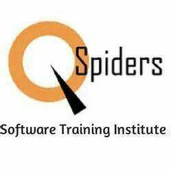

Qspiders

THE WORLD’S LARGEST SOFTWARE TESTING LEARNING PLATFORM
QSpiders is the world’s ace software testing training organization with an aim to bridge the gap between the demands of the industry and the curriculum of educational institutions.
With centers across India, the institute is a platform where young minds are given the opportunity to build successful careers.
”QSpiders is a place where businesses find talent and dreams take flight."
Understanding of various windows server editions
Understanding of various roles.
Working with windows service
Windows server disk management
Going through disk types (basic dusks, dynamic disks, file system types)
Working with disk manager in windows server and remote disk management.
Adding a new disk, extending the existing disk, formatting the disk
Working with windows server performance and setting up performance management counters
Understanding the components on which windows server performance depends upon
Contact